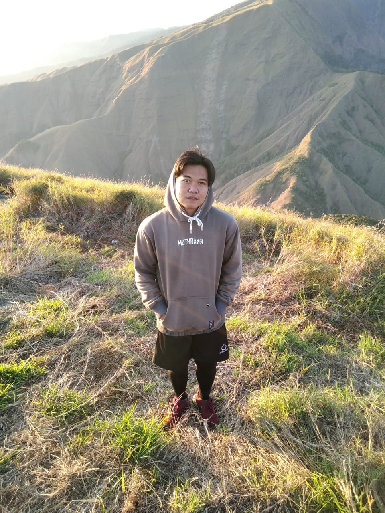

Hai Saya Gilbian Nanda Riandi. Pada Saat ini saya masih belum bekerja dan hanya menjadi Manusia yang masih berkuliah. Untuk Selengkapnya Tentang Saya Silahkan di Scroll-scroll Manja
Pengalaman Kerja
Desktop Programmer
Smkn 2 Mataram
Pernah jadi Desktop Programmer di Smkn 2 Mataram.
Futsal Player
Smkn 2 Mataram
Pernah jadi salah satu Player Futsal di Smkn 2 Mataram.
Pendidikan
Smpn 8 Mataram
Rembiga, Mataram
Pernah Bersekolah di Smpn 8 Mataram.
Smkn 2 Mataram
Jln. Pemuda Mataram
Pernah Bersekolah di Smkn 2 Mataram.
Universitas Mataram
Jl. Ismail Marzuki No.22, Cilinaya, Kec. Cakranegara, Kota Mataram, Nusa Tenggara Barat.
Berkuliah di Universitas Bumigora Mataram sampai Saat ini.
Skills
Network Architect
Hardware Engineer
Network Engineer
Contact Info
16/08/2000
Gilbian Nanda Riandi
0896 8669 5086
gilbiannr06@gmail.com
Hobi
Hobi Saya sendiri cukup sedikit, seperti Olahraga Sepak Bola, Bulutangkis, Lari dan lain-lain. Saya juga senang bermain Game mulai dari game Offline sampai Online.